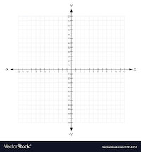
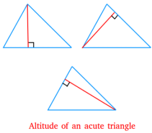
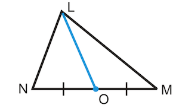
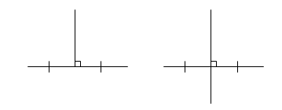
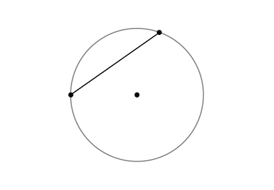

- Cartesian Plane
- A grid with a horizontal line (x-axis) and a vertical line (y-axis) running through its centre. This grid can be used to represent two-dimensional geometric objects such as lines, line segments, and shapes(triangles, quadrilaterals, etc.) and to measure their key aspects.

- Coordinates
- A set of two numbers used to show the location of a point on the Cartesian plane. These numbers represent the horizontal and vertical position of the point respectively, referring to the x-axis (first number) and y-axis (second number). Examples: \[(1, 2)\] \[(x, y)\]
- Slope
- The slope of a line is the measure of how steeply a line rises or falls on the Cartesian plane. Two points on a line need to be identified in order to measure slope. The slope is measured according to the formula \[\frac{rise}{run}\] or \[\frac{\Delta y}{\Delta x}\] (change in y over change in x). This could be expressed using two points and their coordinates, as follows: \[\frac{y_2 - y_1}{x_2 - x_1}\]
- Distance
- The distance between two points can be measured either by counting the squares between them (for horizontal and vertical lines) or by using the distance formula, which is derived from the Pythagorean theorem (for slanted/diagonal lines). The distance formula is expressed as follows: \[d=\sqrt{(x_2-x_1)^2 + (y_2-y_1)^2}\]
- Equation of a line or circle
- An algebraic expression which is true of all points on a line or circle and thus defines the line or circle. This equation contains the variables x and y, which represent the horizontal and vertical coordinates of points on the line or circle.
- Slope/y-intercept form
- This is a method of writing the equation of a line that clearly shows the slope of the line and the y-intercept of the line, which is the point at which the line crosses the y-axis. It is expressed as follows: \[y = mx + b\] where y is the y-coordinate of any point on the line, m is the slope of the line, x is the x-coordinate of any point on the line, and b is the point (0, b) where the line crosses the y-axis. Slope can be positive or negative depending on the direction in which the line traverses the Cartesian plane. A horizontal line has a slope of 0, while a vertical line's slope is undefined.
- Standard form
- This is another way of writing the equation of a line, expressed as follows: $$ Ax + By + C = 0 $$ A, B, and C are numbers and must be integers, and the variables x and y must be on the same side of the equation.
- Equation of a circle
- This equation defines a circle whose centre is at the origin of the Cartesian plane (x = 0, y = 0). This equation can be expressed as $$ x^2 + y^2 = r^2 $$ where x and y are the coordinates of any point on the circle, while r is the length of the radius of a circle.
- Midpoint
- The point on a line segment in the Cartesian plane that is exactly halfway between the two endpoints of the segment. This point's location can be calculated using the Midpoint Formula and the coordinates of the two endpoints: \[\left( \frac{x_1 + x_2}{2}, \frac{y_1 + y_2}{2} \right)\] where endpoint 1 is \((x_1, y_1)\) and endpoint 2 is \((x_2, y_2)\).
- Altitude
- An altitude of a triangle is a line segment drawn from one vertex of a triangle to its opposite side (or base). This line is perpendicular to the base of the triangle and thus shows the height of the triangle. There are three altitudes, some of which may be outside the triangle.

- Median
- A median of a triangle is a line drawn from one vertex of the triangle to the midpoint of its opposite side. This line is possibly, but not necessarily, identical to the altitude of the triangle. However, because it connects to the midpoint of the base, it is by definition always inside the triangle. There are three medians which converge at a point inside the triangle.

- Right Bisector
- The right bisector of a line segment is another line (or segment) that is perpendicular to the first line segment and intersects with the first line segment at its midpoint, thus dividing it into two equal segments.

- Chord
- A chord is a line segment whose endpoints both lie on the same circle.
